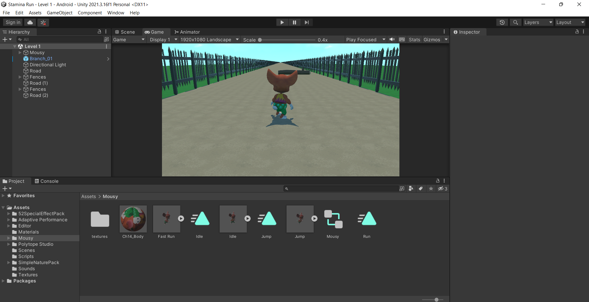
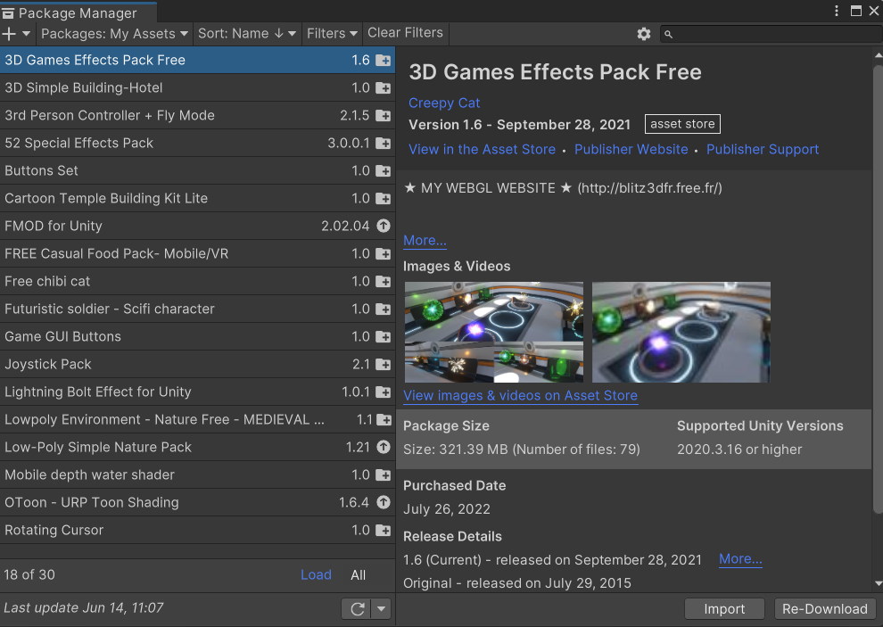

Kridloke is gaming brand which makes mobile and PC games using Unity Game Engine
Unity is a game development environment that is used to make games for PC, Mobile and gaming consoles
Unity is a software that makes games development easy my managing all the files that a team may need to build a game and also provides game publishing support.
You can create folders within unity which store game assets like 3d Models, Animations and Scripts and use them whenever you need them while you are building
your game.

You build the game using drag and drop in the scene view and you can test your game in the game view.

Unity is a moduler game development platform and is built by packages which are managed by the package manager.